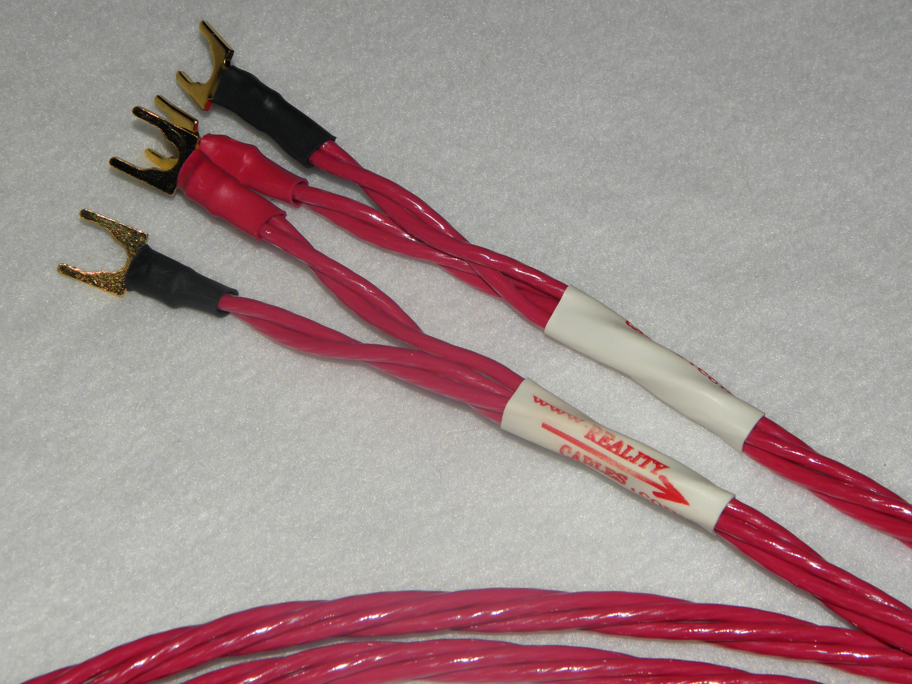
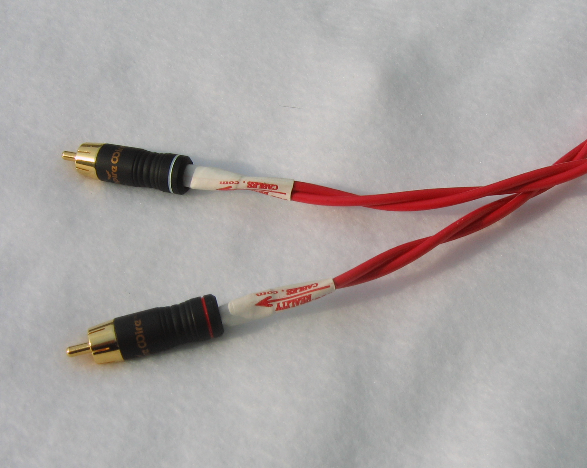

Our mission was to create a cable that had the ability to
sound as close to "reality" as possible. In our quest to
design such a cable, we had to assemble a team of
audiophile engineers across the country from various
industries. We started with a proprietary secret copper
conductor material and tweaked it obsessively. As we
developed our new design, we utilized many different
sound systems for our design changing - both tube and
solid state, low and high priced with everything from
Dipolar, Bipolar, Monitor and huge full range speaker
systems. We felt that our cable should perform equally well
in all set-ups regardless of cost or design. Music is music;
the more you can get to each component and speaker the
better, period!

As we created and perfected our unique "Reality Cables" we learned
quite a few "tricks and tweaks" that we have not seen used by any other
cable manufacturer! Our goal was to create a cable that was more
transparent than any other current design offered on the market
(regardless of cost or technology). We realized we had very lofty goals,
but you've got to have a target, right? As we tried many ideas used by
some other well known cable companies, we soon realized that too
many designs are just decent sounding cables with some unique
feature and rely more on "mumbo jumbo" marketing and the "look" of
their design then actually creating a "wonder cable" that exceeds all
other designs.

After five years, a plethora of design variations and many hundreds of hours of
cumulative listening tests we finally settled on a design that we feel is one of the
best cable designs ever produced. Our cable would be priced at a very reasonable
cost even though it could sonically outperform many of the multi-thousand dollar
cable offerings. We would offer a 20-day money back guarantee.
(Try getting that offer from one of the ultra priced cable companies!).